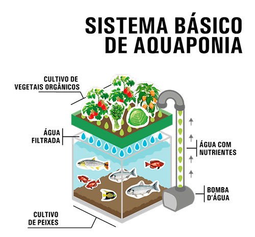
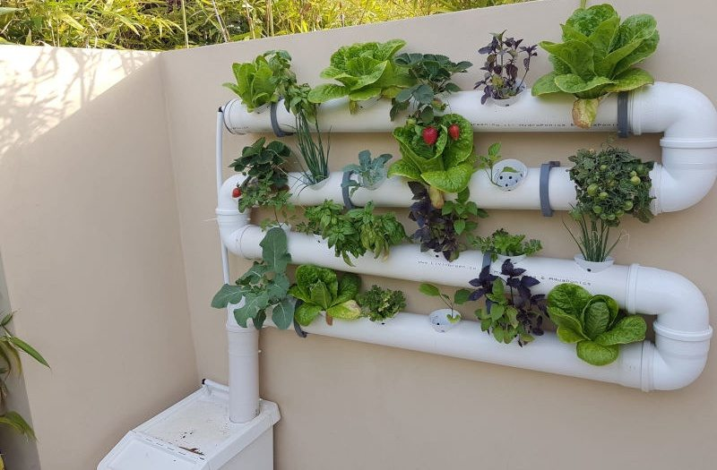
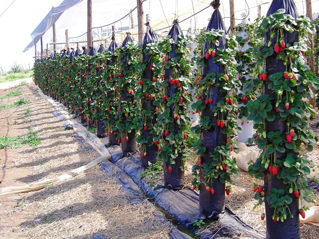
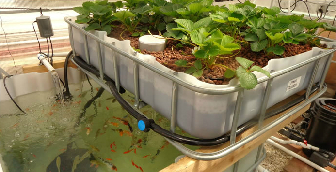
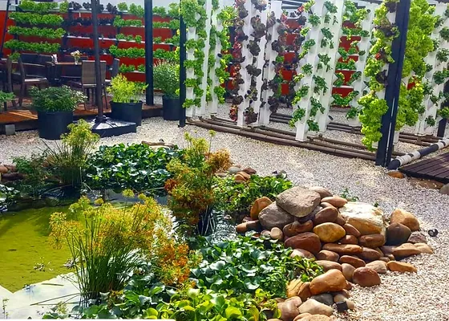
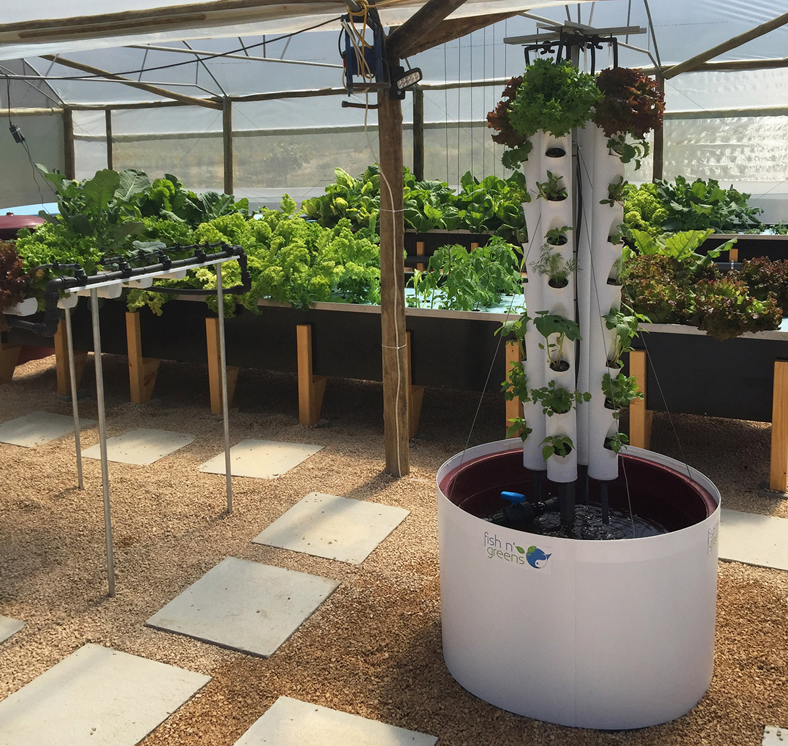
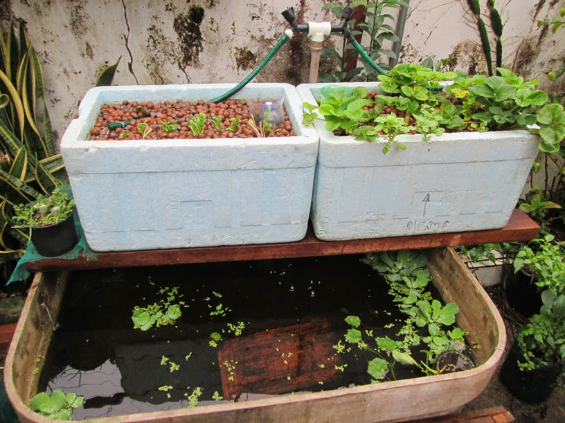
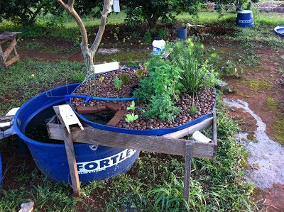
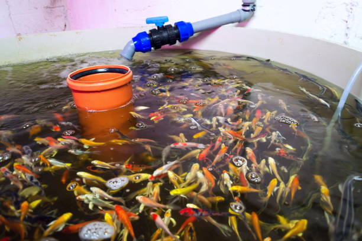

Bem-vindo ao mundo da Aquaponia
Aquaponia é uma técnica revolucionária que combina aquicultura (criação de peixes) e hidroponia (cultivo de plantas sem solo). Através de um sistema integrado, os peixes fornecem nutrientes para as plantas, e as plantas ajudam a purificar a água para os peixes. É um sistema sustentável e ecológico que promete transformar a forma como produzimos alimentos.
Em termos de vegetais, as hortaliças de folhas, como alface, couve, rúcula e espinafre, são especialmente populares devido ao seu crescimento rápido e requisitos menos rigorosos. Ervas aromáticas, como manjericão, coentro e hortelã, também prosperam nesses sistemas. Além das plantas, a aquaponia permite a criação de várias espécies de peixes, incluindo tilápia, carpa e bagre. Com a combinação certa de plantas e peixes, a aquaponia oferece uma abordagem holística para a produção de alimentos frescos e nutritivos ao longo de todo o ano.
       